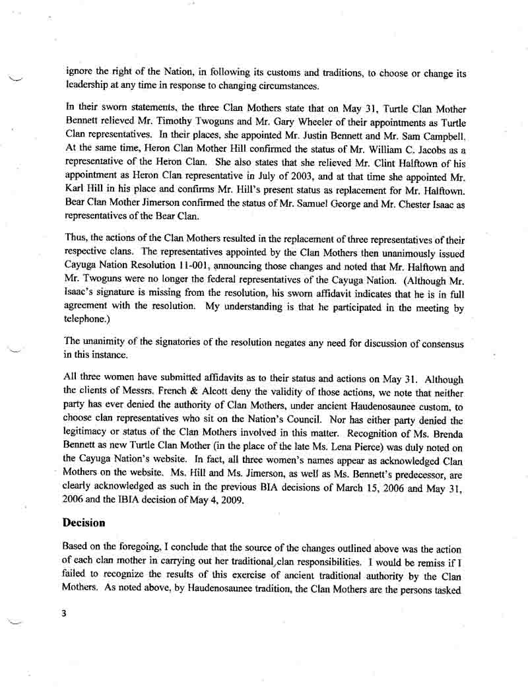
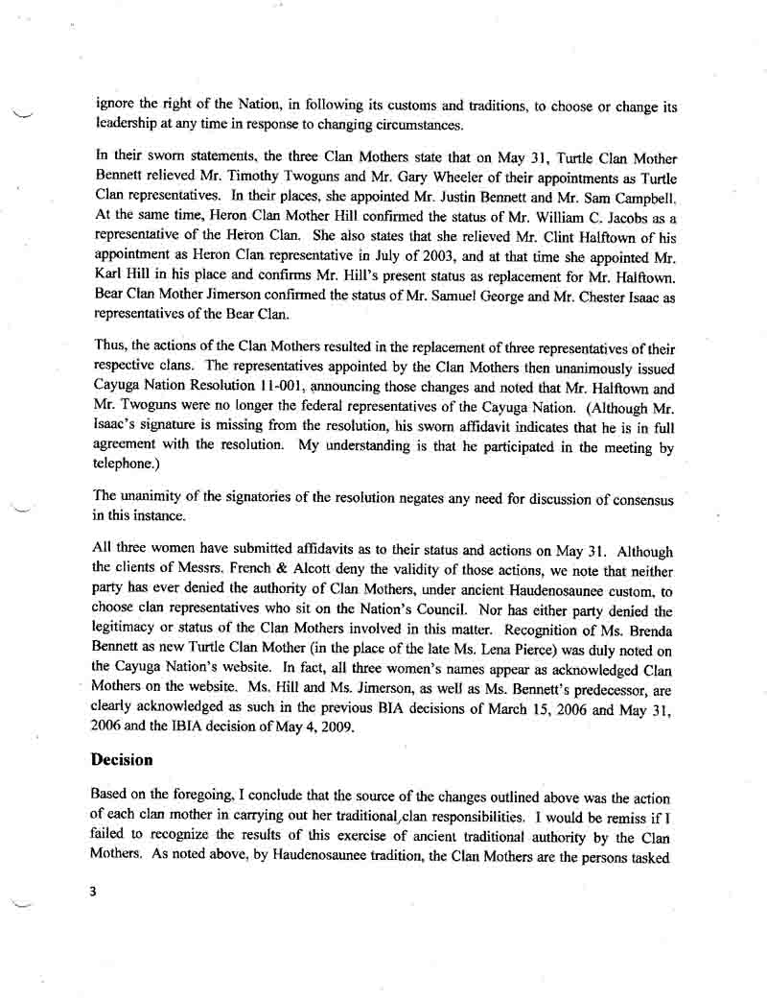

HMG Archives:
Legal Documents
In 2011, the Eastern Region Director of the BIA, Franklin Keel, recognized and affirmed that Halftown had been removed. Only later did the Department of Interior change that decision, based on a technicality.

 


In 2018, the Gayogo̱hó:nǫ⁷ Council of Chiefs sued the US Department of Interior for assisting with and then affirming a corrupt Statement of Support (SOS) campaign by the Halftown Council. The Motion for Summary Judgment is an extensive legal document that lays out the details of the case, including expert testimony concluding that Halftown's SOS campaign was "a deeply flawed method of assessment from which no information may be confidently gathered" (p35 of the PDF).